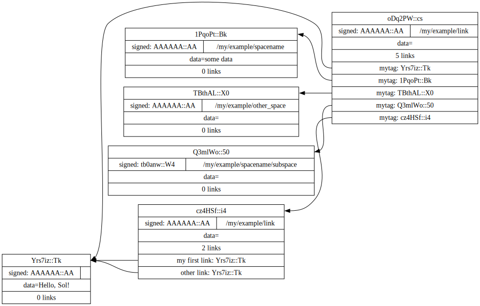

This introduction jumps headlong into linkspace using the command line tool `lk` in bash. If you're unfamiliar with reading bash then why is a better place to start. You can follow along by downloading the latest release.
lk --versionlinkspace-cli linkspace-cli - 0.3.1-rc1 - main - 106061e - 1.72.0-nightly
Point
A single unit in linkspace is called a `point`. A point can hold just shy of 64kb.
echo "Hello, Sol!" | lk point > mylogBeyond just data, there are some (optional) additional fields, such as:
a path:
echo -n some data | lk point ::/my/example/path --data-stdin >> myloga timestamp that defaults to `now`:
lk point ::/my/example/other_path --create-int $(($(date +%s%N)/1000000)) >> mylogand a signature:
KEY=$(lk key --no-pubkey --no-lk --password 'my secret')
lk point ::/my/example/path/subpath --sign --enckey "$KEY" --password 'my secret' >> mylog
KEY='$argon2d$v=19$m=8,t=1,p=1$tb0anwpH0rSbYe6JLd1Bgtf00QQUAYuhOcBqeSjAgW4$kYAtGyF78cfPjRqcm4Y/s1hgQTRysELK/L910P2u27c'
lk point ::/my/example/path/subpath --sign --enckey "$KEY" --password '' >> mylogAll points are hashed using Blake3.
`pktf` formats a stream of points.
cat mylog | lk pktf "The hash: [hash:str] refers to a point with path '[path:str]' and data: '[data]'"The hash: Yrs7iz3VznXh-ogv4aM62VmMNxXFiT4P24tIfVz9sTk refers to a point with path '' and data: 'Hello, Sol!
'
The hash: KXDT6NORMMAHrSX1yKgoxPX-bXMydDNFI6T4QfSxX0k refers to a point with path '/my/example/path' and data: 'some data'
The hash: CavtGsDzcNysCAUoPnqPX3ijmyodl8rIQimg80SMj4o refers to a point with path '/my/example/other_path' and data: ''
The hash: uH9sMzedaItl5E9Ntjd7WIPxB3IH1nUKbcarD8HDEfA refers to a point with path '/my/example/path/subpath' and data: ''
`filter` to take a subset of points. Here we take only the points with a path starting with `/my/example` and 1 additional component
cat mylog | lk filter ::/my/example:* | lk pktf "[hash:str] [path:str]"KXDT6NORMMAHrSX1yKgoxPX-bXMydDNFI6T4QfSxX0k /my/example/path
CavtGsDzcNysCAUoPnqPX3ijmyodl8rIQimg80SMj4o /my/example/other_path
What makes a supernet is:
- A hash addressable `unit` - in linkspace the `point`
- A point references other points by hash
In linkspace these references are called `links`. Each link is a 16 byte tag and 32 byte hash value. Tags can be anything. If less than 16 bytes are supplied it is left-padded with 0's.
HASH=($(cat mylog | lk pktf [hash:str]))
lk point "::/my/example/link" -- "my first link:${HASH[0]}" "other link:Yrs7iz3VznXh-ogv4aM62VmMNxXFiT4P24tIfVz9sTk" >> mylogYou can get fancy with `pktf` and `xargs`.
cat mylog | lk pktf "mytag:[hash:str]" | xargs lk point ::/my/example/link -- >> mylogA tool like `lk collect` has a few additional options for building points linking to other points. However, the `lk` binary is meant to do simple things. Use the library and a better programming language when doing non-trivial stuff.
Click here to see a graphical representation of mylog

Creating points with `lk point` detects what kind you're trying to build. But it is better to be explicit. The 3 types of points are: `datapoint`, `linkpoint`, or `keypoint` (a signed linkpoint).
NOTE: linkpoint and keypoint do not read data from stdin by default.
echo somedata | lk linkpoint ::/my/other_path --data-stdin | lk pktf "[hash:str] = [data]"KbiehZXgKTWUxeo4E4qP9dIa1gomGO8c-DIu3P2jtG8 = somedata
Linkspace is primarily its packet format. Using linkspace can be as simple as a device broadcasting linkspace points. Everything else is about making it easy to build complex things with these points. If one of the tools is a bad fit for your use-case, then consider building and sharing your own tool.
Database
Usually you'll want to save points to a linkspace database.
export LK_DIR=/tmp/linkspace ;
lk init ;
cat mylog | lk save > /dev/null ; LkInfo { dir: "/tmp/linkspace" }
Instead of using `save` you can set a write destinations directly.
echo hello world | lk point --write db --write file:mylog --write stdout | lk pktf [data]hello world
The database is useful for two reasons:
- It has an index to quickly lookup by hash or path
- Multiple processes/threads can read, write, and watch for new points.
The library API has a user-driven eventloop that uses callbacks (guide). The cli on the other hand is focused on streams. The commands are `watch-log`, `watch-tree`, `watch-hash`. These are shorthand for `watch –mode ..`.
lk watch-tree ::/my:** | lk pktf "[path:str]" > ./watching &[1] 10718
cat ./watching/my/example/link
/my/example/link
/my/example/path
/my/example/other_path
/my/example/path/subpath
Adding a new point
lk linkpoint ::/my/my/my --write dbNotifies watching threads.
cat ./watching/my/example/link
/my/example/link
/my/example/path
/my/example/other_path
/my/example/path/subpath
/my/my/my
A general purpose supernet
To build an application pick a domain name (like you would an ip port - 16 bytes '\0' padded). For example `imageboard`.
lk linkpoint imageboard::/hello | lk p "[domain:str]"imageboard
The goal of linkspace is to make it simple to build applications for a network of devices.
A typical linkspace applications shouldn't have to deal with sockets. Instead, the application should only have to define how points are linked and how to handle them not being available (yet).
Simple applications designed for sockets that read/write streams of data allow us to ignore asynchronicity and partial state most of the time.
Until you add a third device to a system, and things explode in complexity and all assumptions have to be re-evaluated.
For example, you might want to build an application so multiple people can draw to a shared 'board'. One option to map that idea into points is:
- Images are saved as data points
- Every link in a linkpoint is a hash to an image, and a tag holding (x,y) coordinates.
Adding an image might look something like:
X=30 ; Y=200 ; IMG="https://upload.wikimedia.org/wikipedia/commons/3/35/Tux.svg" ;
curl -s $IMG | lk datapoint > tux.pkt
IMG_HASH=$(cat tux.pkt | lk p "[hash:str]")
lk linkpoint imageboard::/hello/tux.svg -- $(printf "%08d%08d" "$X" "$Y"):$IMG_HASH >> tux.pkt
HASHES=($(cat tux.pkt | lk p "[hash:str]")) # store as an array
lk save --pkts ./tux.pkt # `cat` is usually useless but can be easier to read.Building an image requires the program to watch for new packets in `imageboard::/hello`, and on every (new) point draw over the image.
lk watch-tree "imageboard::/hello:**" --max 1 \
| lk p "[hash:str] has the links:\n [links]" ciEsA2xnVktIvtePHSUSVcdJ_hHIlOM41lI5-23z7Ko has the links:
0000003000000200:Sz0ZZDWxKht-jbM7Tfkn0nis4tNoKNPH_kfI7JYUnY4
Otherwise, the previous example would not have worked.
Without the quotes the characters `[lin` in "[links]" would be interpreted by the default bash shell.
A link might hold a hash to a point that is not yet available on the device. The program has to decide how to handle the situation. For `imageboard` we'll just wait. Waiting can be done manually. e.g.
lk watch-tree "imageboard::/hello:**" --max 1 \
| lk p "[links]" \
| cut -d':' -f2 \
| xargs -i lk watch-hash "{}" \
| lk pktf "got point [hash:str] which has [data_size:str] bytes"got point Sz0ZZDWxKht-jbM7Tfkn0nis4tNoKNPH_kfI7JYUnY4 which has 49983 bytes
Or use `lk get-links`. It has a few common strategies that might be simpler.
lk watch-tree "imageboard::/hello:**" --max 1 \
| lk get-links pause \
| lk pktf "[hash:str]"Sz0ZZDWxKht-jbM7Tfkn0nis4tNoKNPH_kfI7JYUnY4
ciEsA2xnVktIvtePHSUSVcdJ_hHIlOM41lI5-23z7Ko
For the imageboard applications we now have to wire up another program to merge images into a single picture. See the tutorial for an example on doing this.
The final piece of the puzzle is how exchanging points is organized. Each linkpoint has a group field. A group is 32 bytes to signal the intended set of recipients. Members ensure only members have access to the points. By convention, the public group is:
PUB=$(echo "Hello, Sol!" | lk data | lk pktf "[hash:str]")
lk linkpoint :$PUB:/example_path | lk p "[group:str]"Yrs7iz3VznXh-ogv4aM62VmMNxXFiT4P24tIfVz9sTk
If no group is specified (like we've been doing) the public group is used.
lk linkpoint ::/example_path | lk p "[group:str]"Yrs7iz3VznXh-ogv4aM62VmMNxXFiT4P24tIfVz9sTk
The other special group is `[0;32]`, also called the private group. You can refer to it with the expression `[#:0]`. Functions/subcommands that read/write existing points skip and/or warn whenever a point from the private group is seen unless enabled with `–private`.
lk linkpoint example:[#:0] | lk save 2>&1 # creating a packet is ok - but receving is not accepted by `lk save` without --privateerror: Args { inner: ["/home/rs/Projects/linkspace/target/debug/lk", "save"] }
Pkt(
PrivateGroup,
)
You can build a system to exchange points in a group from scratch. Linkspace does not prescribe a way to do so. Each group / network is different, and no single solution can cover every situation.
For example, you can, use `lk watch imageboard:$MYGROUP | …` and forward the entire stream to another device using netcat/socat, ssh, email, http, a USB stick, or any other way to exchange bytes.
There are build in tools to allow building more complex networks.
A `point` refers to the fields we've seen so far. All these fields are included in the hash. However, everything is done in the point packet format. This format includes the point fields, the hash, and 32 unhashed/mutable bytes.
Filters work on these mutable bytes as well. This let you quickly build specific network topologies.
netcat 10.0.0.1 -p 6000 | lk route ubits0:=:0000 | lk save & # get packets from a host and set their ubits0 to 0000
netcat 10.0.2.0 -p 6000 | lk route ubits0:=:0001 | lk save & # get packets from another host and set their ubits0 to 0001
lk linkpoint example::/hello | lk route ubits0:=:0002 | lk save # save my packets with ubits 0002
lk watch-log --asc example::/hello -- "ubits0:>:0000" | nc 10.0.0.1 -p 6000 & # forward all packets with ubits0 higher than 0000 back to host.
This makes your streams incompatible with all other tools.
Linkspace does define some conventions. These are functions that encoded creating/watching for point with some predefined pathname, links, and data format. Conventions enable interoperability between multiple applications and background processes.
One such convention is the `pull` convention. This writes a query as a specific point.
lk pull imageboard::/hello --write stdout | lk p "[path:str]\n\n[data]"/pull/[b:Yrs7iz3VznXh-ogv4aM62VmMNxXFiT4P24tIfVz9sTk]/[a:imageboard]/default
:qid:default
type:1:[b2:00000010]
domain:=:[a:imageboard]
group:=:[b:Yrs7iz3VznXh-ogv4aM62VmMNxXFiT4P24tIfVz9sTk]
prefix:=:/hello
path_len:=:[u8:1]
The goal of `pull` is to allow one process, e.g. an application like imageboard (bash) or mineweeper (python) to signal another process, e.g. a group exchange application like bash.exchange, that it wants packets matching a query from the group.
Queries define a 'set of points' in linkspace. The `filter` and `watch` commands are syntax sugar over queries. You can add `–print-query` to those commands to see the query used.
Queries are designed such that joining two query strings the result is the common subset of both or an error if the union is empty.
lk print-query example::/ok :mode:tree-desc
type:1:[b2:00000010]
domain:=:[a:example]
group:=:[b:Yrs7iz3VznXh-ogv4aM62VmMNxXFiT4P24tIfVz9sTk]
prefix:=:/ok
path_len:=:[u8:1]
lk print-query example::/ok -- "path:=:/not_ok"error: Args { inner: ["/home/rs/Projects/linkspace/target/debug/lk", "print-query", "example::/ok", "--", "path:=:/not_ok"] }
Error {
context: "Error adding rule \'path\'",
source: Error {
context: "path:=:/not_ok",
source: "prefix conflicting with path",
},
}
That's it for this quick introduction. For a more in-depth technical guide or the Python API see the Guide. See why for some of the reasoning behind linkspace.
Linkspace is free and open source under the MPL-2.0. Give it a try next time you want to talk about data.